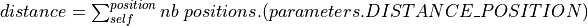

Module road_item¶
Module name : road_item.py¶
Created on 14/02/2021 by Eric Ollivier
Versionning :
- 0.1 : Initial version
- 0.2 ; Ajout de la notion de franchissable (attribut “passable”)
-
class
road_objects.road_item.RoadItem(axe, path=None, roads=None, name=None, **kwargs)¶ Classe de base pour les objets de la route :
- Véhicule
- signalisation (ex : feux tricolores)
- obstable (à venir)
- …
Contribue à calculer le changement de vitesse des véhicules
Paramètres: - axe – Context graphique (objet matplotlib.Axes)
- path – Itinéraire de l’objet RoadItem (objet de type roadmaps.Path)
- roads – Liste des routes si path n’est pas défini(objet list d’objet roadmap.Road)
- name – Nom de l’objet RoadItem
- current_time – Valeur initial du temps courant
- init_time – Valeur du temps de début de scénario
- index – Valeur initial de la position dans l’itinéraire
- passable – Valeur initial de propriété de franchissement
-
classmethod
Add_item(item)¶ Ajoute un objet à l’inventaire des items de la route
-
classmethod
Get_Items()¶ Retourne la liste des items
-
__eq__(other)¶ Définit l’égalité pour la comparaison entre les objets
-
__getitem__(name)¶ Retourne le composant graphique correspondant au nom name.
-
__le__(other)¶ Test si self a une position avant un autre objet dans le parcours de self.
Retourne: - True : si other est sur une position à venir de l’itinéraire de self
- False : si
- other n’a pas de postion commune avec self
- other n’a pas démarré
- self n’a pas démarré
-
add_component(name: str, component)¶ Ajout un élement graphique de base pour la représentation de l’Item
Paramètres: - name – Nom du composant
- component – Composant à ajouter de type matplotlib.Artist
-
add_plot(*args, name: str, **kwargs)¶ Crée un objet grapghique avec la méthode Axes.plot et l’ajoute à la liste des composants graphiques
Paramètres: - name – Nom à donner au nouveau composant
- args – Liste des paramètre pour la méthode Axes.plot
- kwargs – Liste des paramètres nommés pour la méthode Axes.plot
-
add_road(*road)¶ Ajoute une ou plusieurs route(s) à l’itinairaire
-
ax¶ Contexte graphique (objet de type matplotlib.Axes)
-
current_time¶
-
delta_time¶ Durée entre deux mises à jour de current_time
-
distance(position: roadmaps.position.Position) → float¶ Calcul la distance entre <self> et l’objet <item>
Pré-requis de construction : la distance entre chaque position est constante et vaut parameters.DISTANCE_POSITION distance ::= (nb positions entre self et position) * DISTANCE_POSITION

- ancien mode de calcul :
- distance ::= SUM( DISTANCE(postion_i, position_i+1) ), avec position_i in[self.position, item.position [ La fonction de calcul de distance entre 2 positions est défini par le fonction DISTANCE
Retourne: - distance(self, other) si other a au moins une position commune avec self
- None si pas de position commune
-
forward(new_time)¶ Methode par pdéfaut pour faire avancer un objet dans le temps
-
get_components() → list¶ Fournit la liste de composants graphique
Retourne: objet list d’objets de type matplotlib.Artist
-
get_plot(new_time=None)¶ Retourne les éléménts graphique à afficher
-
get_position(new_time)¶ Retourne la position (x,y) du Vehicule
-
id¶ Identifiant de l’objet RoadItem
-
index¶ Index de la la position courante dans l’itinéraire.
-
init_graphic()¶ Initialise la représentation graphique
-
is_ended¶ Retourne True si l’objet RoadItem a fini son chemin sinon`False`
-
is_running¶ Retourne True si l’objet RoadItem a débuté son chemin et ne l’a pas terminé, False sinon
-
is_started¶ Retourne True si l’objet RoadItem a débuté son chemin sinon False
-
length¶ Nombre de Position sur l’itinéraire
-
name¶ Nom de l’objet RoadItem
-
next_position¶ Position estimée de la prochaine frame
-
passable¶ Retour le statut de franchissement
-
path¶ Itinéraire de l’objet RoadItem (objet de type`Path`)
-
position¶ Position courante de l’objet RoadItem Retourne None s’il n’est pas sur le chemin (pas actif)
-
remain_path(end_index=None)¶ Retourne la portion renatnt à parcourrir pour l’objet RoadItem
Paramètres: end_index – Index correspondant à la borne max Retourne: - Objet list contenant les objets Position à venir s’il en reste.
- Objet list vide s’il n’y a plus rien à parcourrir
-
set_impassable()¶ Rend RoadItem infranchissable
-
set_passable(mode=True)¶ Change le statut de franchissement
Paramètres: mode – - True : rend RoadItem franchissable (par défaut)
- False : rend RoadItem infranchissable
-
start(init_time)¶ Définit le moment du départ : permet un décalage dans la lecture des positions